最全综述|一文了解单细胞和空间组学的分类与应用
原文：https://mp.weixin.qq.com/s?__biz=MzAwMzIzOTk5OQ==&mid=2247529961&idx=1&sn=b9f65c76a8776caada786c6d57ace15e&chksm=9b3c0cb9ac4b85af132efa2eb2440dee78823f36cd5ee04a495dfdfaaf31b93a22c93e8f85d7#rd 合集：文献速递
一、写在前面
本次分享的是《Science China Life Sciences》（IF=8.0）“Advances and applications in single-cell and spatial genomics”DOI: 10.1007/s11427-024-2770-x链接：https://link.springer.com/article/10.1007/s11427-024-2770-x
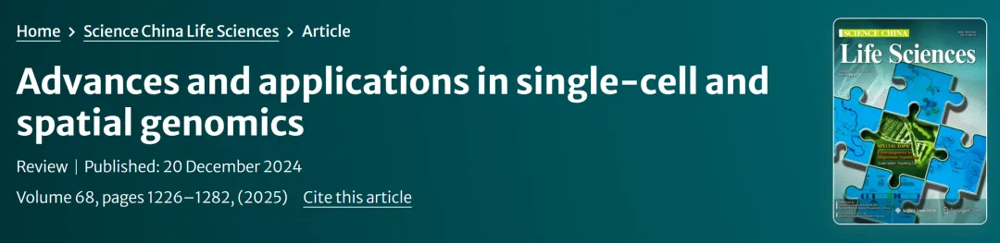
**** 单细胞和空间基因组学作为近年来生物医学领域的突破性技术，彻底改变了我们对细胞异质性、组织结构和疾病机制的理解。传统的群体细胞测序方法仅能提供平均信号，掩盖了单个细胞的独特性，而单细胞测序技术的出现，使得研究人员能够以高分辨率揭示细胞的分子特征和功能状态 。随着技术的不断进步，单细胞测序已从最初的低通量、单一模态发展到高通量、多组学集成，极大地扩展了其应用范围。空间基因组学的兴起更是将分子数据与组织背景相结合，提供了对细胞在原生环境中的行为和相互作用的深入洞察。这篇综述旨在系统回顾单细胞和空间基因组学的技术进展、应用及其在生物医学研究中的变革性影响，同时探讨其在药物发现、精准医疗和临床转化中的潜力 。通过阅读本文，读者将全面了解这一领域的最新动态和未来发展趋势。对单细胞/空转感兴趣的小伙伴可参考以下内容：生信基地122篇单细胞教程全索引空间转录组学习手册合辑 自学有困难的小伙伴也不妨看看：scRNA-seq，从小白到文献复现大神！如果需要数据分析指导 、生信热点全文复现 、自测数据个性化分析 辅导、常态化实验学习，欢迎联系客服微信[Biomamba_zhushou]二、主要结果
1. 单细胞与空间基因组学：克服传统方法的局限
第1章 单细胞和空间基因组学概述
人体由数万亿个细胞构成，尽管它们都源于同一个受精卵，但在发育和生命活动中，细胞间会因遗传与表观遗传的差异而展现出巨大的异质性。传统的群体细胞（bulk-cell） 分析方法，如常规的下一代测序（NGS） ，是将大量细胞混合后进行分析，只能得到一个“平均信号”，这会掩盖不同细胞亚群乃至单个细胞独特的生物学状态和功能，从而限制了我们对复杂生命过程的深入理解。虽然单细胞PCR 或免疫荧光（IF） 等技术可以进行单细胞分析，但它们一次只能检测少数几个分子标记，通量极低，无法满足系统性研究的需求。
为了实现高通量的单细胞分析，研究人员必须攻克两个核心技术瓶颈。第一个瓶颈是从复杂的组织样本中高效、无损地分离单个细胞 。目前主流的分离策略主要依据细胞的物理特征 （大小、密度）、生物学特性 （表面蛋白）或分子条形码 等原则。具体的技术方法包括显微操作 、激光捕获显微切割（LCM） 、荧光激活细胞分选（FACS） 和微流控辅助液滴封装 。其中，微流控技术因其高通量和高自动化的优势，已成为当前最主流的单细胞分离平台。第二个瓶颈是在分离后对单个细胞内微量的遗传物质进行有效扩增 。早期的技术主要基于PCR，但存在扩增偏好和覆盖率不均的问题。为解决这些问题，后续开发了等温扩增 和体外转录（IVT） 等更先进的策略，显著提升了扩增的保真度和效率。在单细胞技术发展的同时，空间基因组学（spatial genomics） 作为另一条关键技术路线也取得了长足进步。与单细胞技术需要将细胞从组织中分离出来不同，空间基因组学的核心优势在于能够保留细胞在组织内的原始位置信息 。通过空间转录组学（STs） 和多重原位杂交 等技术，研究者可以直接在组织切片上描绘基因表达等分子信息的空间分布图谱。
单细胞技术提供的高分辨率分子信息与空间技术提供的原位空间背景相结合，共同催生了构建综合细胞图谱（comprehensive cellular atlases） 的宏伟目标。这些图谱旨在系统性地绘制生物体内所有细胞类型的分子特征、空间位置和相互关系，为深入揭示发育生物学、疾病机制和寻找新的治疗靶点提供了前所未有的强大工具。
2. 单细胞测序技术：从转录组到多组学的演进
作为该领域的基石，单细胞RNA测序（scRNA-seq） 是最早成熟并得到广泛应用的技术，它通过捕捉单个细胞内的完整转录本信息，为我们提供了定义细胞身份、状态和功能的“快照”。scRNA-seq的发展主要遵循两条技术路线：一是以Smart-seq 为代表的基于微孔板（plate-based） 的方法，这类技术虽然通量较低，但能提供全长（full-length） 的转录本覆盖，特别适合进行可变剪接和等位基因表达等精细分析；二是以10x Genomics Chromium 平台为代表的基于液滴（droplet-based） 的高通量方法，它通过微流控（microfluidics） 技术将单个细胞与带有唯一条形码的微珠包裹在油滴中，实现了数以万计细胞的同时分析，但通常只对转录本的3'或5'末端进行测序，更适用于大规模的细胞分型。除了这两种主流路线，单细胞组合索引（Single-Cell Combinatorial Indexing, sci） 技术通过“拆分-汇集”的标记策略，提供了一种无需昂贵设备即可实现高通量分析的低成本替代方案。这些技术的核心突破在于单细胞分离 、细胞条形码标记 和高效的cDNA文库构建 策略（如利用MMLV逆转录酶的模板转换 机制）。
在scRNA-seq取得成功之后，单细胞分析迅速扩展至基因组和表观基因组等多个维度，以期更全面地理解细胞调控的复杂性。单细胞基因组测序（scDNA-seq） 专注于检测单个细胞内的DNA变异，如单核苷酸变异（SNVs） 和拷贝数变异（CNVs） ，其关键在于MDA 和MALBAC 等全基因组扩增技术的应用。与此同时，单细胞表观基因组测序 也发展迅速，并形成了多个重要分支：在染色质可及性 方面，基于Tn5转座酶的scATAC-seq 因其高效和便捷已成为该领域的“金标准”；在DNA甲基化 分析方面，技术主要围绕亚硫酸氢盐处理 （如scBS-seq ）或酶促反应展开；对于组蛋白修饰 的研究，技术已从传统的ChIP-seq 方法，发展到信噪比更高、流程更简便的CUT &Tag技术；而为了探究染色质的三维结构，scHi-C 等方法被开发出来，用于在单细胞水平上捕捉染色质的相互作用。
单细胞技术的边界还在不断拓宽，涌现出许多针对特殊生物学问题的专门应用。例如，通过结合代谢标记（如4sU）和测序，scSLAM-seq 等技术得以追踪RNA动态学 ，区分新旧转录本，为研究增添了时间维度。另一项极具挑战性的前沿是单微生物RNA测序 ，研究人员正通过改进RNA捕获方式（如使用随机引物或体外加A尾）和rRNA去除策略，逐步克服细菌RNA含量低、无poly(A)尾和细胞壁坚硬等障碍。此外，对线粒体DNA（mtDNA） 、蛋白质和代谢物等其他分子模态的单细胞分析也正在兴起，共同推动着我们向着对单个细胞进行全方位、多维度解析的目标迈进。
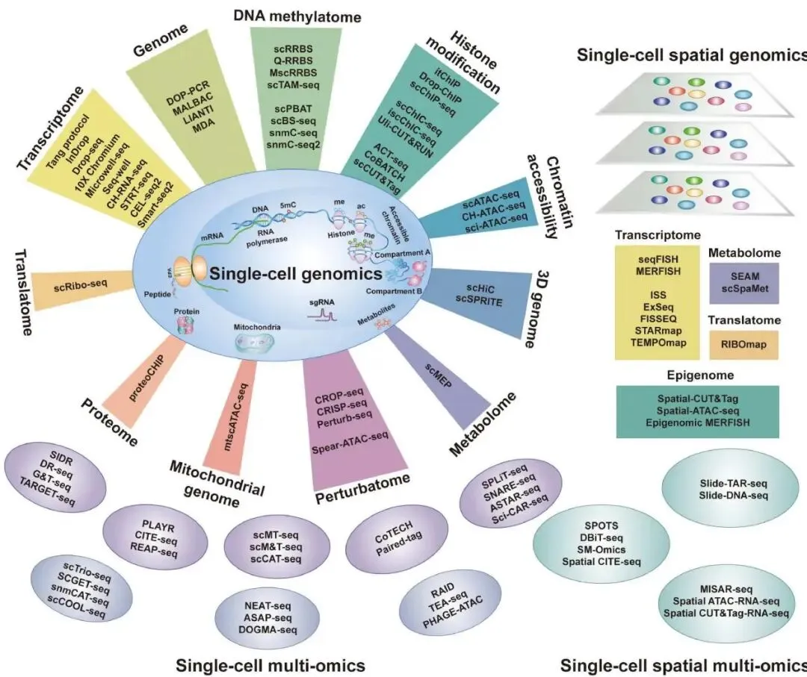
图1
3. 单细胞多组学：在同一个细胞内整合多维度信息
它的核心价值在于，通过在同一个细胞内同步检测多种不同类型的分子（如DNA、RNA、蛋白质），从而超越单一组学所能揭示的相关性，去探索不同分子层面之间的直接调控关系和因果联系。 实现这一目标的关键，也是多组学技术与单组学技术最根本的区别，在于必须解决模态分离（modality separation） 的挑战，即如何在一个微观体系内，有效地区分并捕获不同种类的分子，同时避免信号的交叉污染和损失。
作者将当前主流的模态分离策略归纳为三大类。 第一类是物理分离（physical separation） ，这是最直观的策略，例如，通过温和裂解细胞后，利用离心或磁珠（magnetic beads） 捕获等方式，将细胞核 （富含基因组和表观基因组信息）与细胞质（富含转录组信息）分离开来，再对两部分分别进行文库构建，如SIDR-seq 和scTrio-seq 技术。 第二类是酶转化（enzymatic conversion） ，这是一种更为精巧的策略，它利用特定的酶对其中一种分子模态进行化学修饰，从而在后续的统一分析中能将其与其它模态区分开。 例如，在scNOMe-seq 技术中，研究人员使用GpC甲基转移酶将开放染色质区域的GpC位点甲基化，这样在进行亚硫酸氢盐测序时，便能同时读取到天然的CpG位点甲基化信息和代表染色质可及性的人工GpC甲基化信号。 第三类是测序后分离（post-sequencing separation） ，也常被称为计算分离，是目前高通量方法的主流选择。 该策略在文库构建的早期，就通过独特的DNA条形码分别标记好不同的分子类型，然后将所有分子混合、扩增并进行统一测序，最后在数据分析阶段，通过识别这些条形码，以计算的方式将读长（reads）“分拣”回各自所属的模态。
基于这些分离策略，多组学技术组合日益丰富，其中最成熟和常见的应用是围绕转录组 展开的。 例如，SNARE-seq 和SHARE-seq 等技术实现了染色质可及性 与转录组的同步分析；Paired-Tag 技术则连接了组蛋白修饰 与转录组。 更为复杂的“三合一”技术，如snmCAT-seq ，已能同时测量转录组、染色质可及性和DNA甲基化。 在细胞质层面，以CITE-seq 和REAP-seq 为代表的技术，通过使用抗体衍生标签（ADTs） ，巧妙地将细胞表面或内部蛋白质的检测“翻译”成了可测序的DNA条形码信号，从而实现了蛋白质组与转录组的联合分析。 此外，连接3D基因组 与基因表达的HiRES 技术，以及探索翻译组的T &T-seq技术也已出现，共同推动着我们向着在单细胞内构建一个完整、多维度的分子调控网络的目标不断前进。
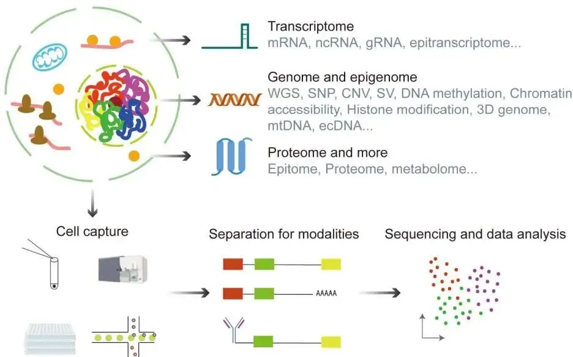
图2
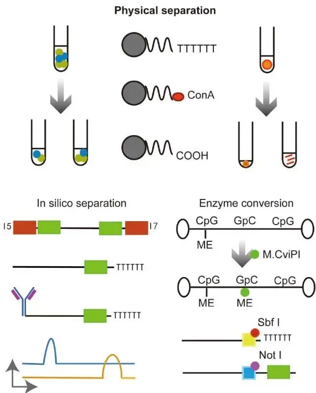
图3
4. 空间基因组学：在组织原位解码生命蓝图
作者将纷繁复杂的技术按照其实现空间解析的核心原理，划分为两大类、四个子方向（图4）。 第一大类是空间成像（Spatial Imaging） 技术，它依赖显微镜直接在组织上“看”到分子。 其中包括空间原位杂交（SISH） ，它以smFISH 为基础，通过组合编码的荧光探针来标记和识别特定的RNA分子，如MERFISH 和seqFISH 技术，目前已能同时对上万个基因进行原位成像。 另一个分支是空间原位测序（SISS） ，它更为直接，通过在组织切片上进行原位的DNA扩增和测序反应来读取分子序列，代表性技术有ISS 和STARmap 。
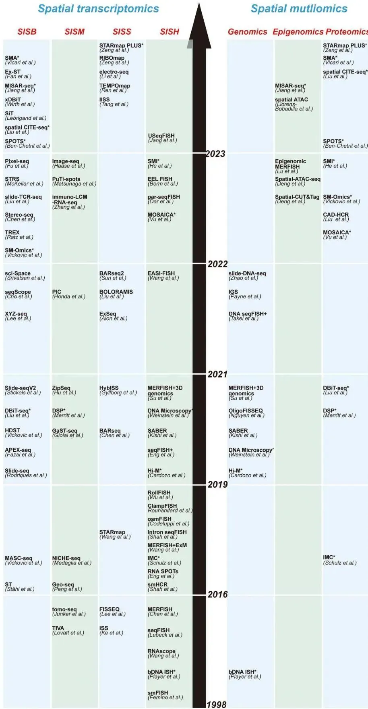
图4
第二大类是空间测序（Spatial Sequencing） 技术，它将高通量测序的强大能力与空间信息相结合。 其中，空间原位微解剖（SISM） 是最早的策略，它利用激光捕获显微切割（LCM） 等方法，先从物理上分割出感兴趣的组织区域，再对这些区域的提取物进行测序，其空间分辨率受限于物理切割的精度。 而空间原位条形码（SISB） 技术则是当前发展最快、应用最广的方向。 它的核心思想是“先标记，后测序”，即预先在一个特殊的芯片表面铺设好带有空间位置信息的DNA条形码探针阵列。 组织切片贴附于芯片后，细胞内的mRNA会被原位的条形码探针捕获，随后将所有捕获的分子进行统一测序，最后通过解读每个分子携带的“地址”条形码来重构其空间分布图。 这一技术路线从早期ST 技术（即10x Genomics Visium 的前身）的几十微米级分辨率，发展到基于微珠的Slide-seq 的十微米级分辨率，最终通过直接利用高密度测序芯片作为捕获表面的Stereo-seq 和seqScope 等技术，实现了颠覆性的纳米级亚细胞分辨率。
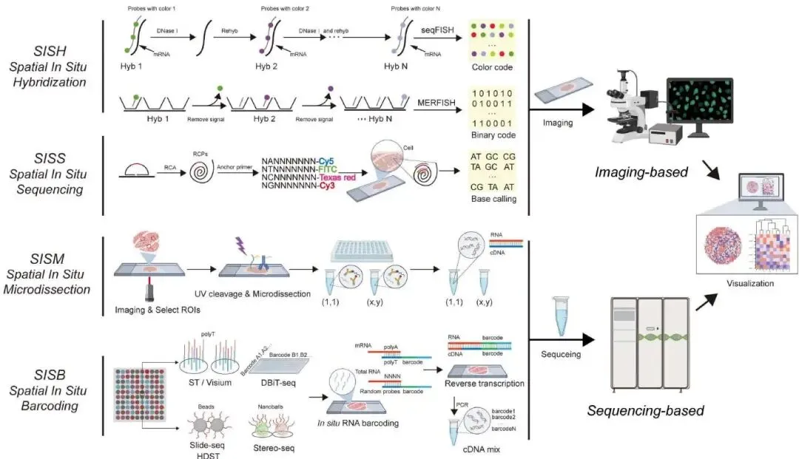
图5
在单转录组技术走向成熟的同时，空间多组学 成为该领域最新的前沿。 研究者们正努力在同一张组织切片上实现多维信息的同步检测。 目前，空间表观基因组学 （如spatial-ATAC-seq 和spatial CUT &Tag）和空间蛋白质组学 已经取得了重要突破。 特别是后者，通过借鉴CITE-seq的思路，利用抗体衍生标签（ADTs） 将蛋白质信号转化为可测序的条形码，在Stereo-CITE-seq 等技术中实现了转录组和蛋白质组的空间共检测。 这些多组学技术的出现，正推动我们对组织功能和疾病机理的理解进入一个前所未有的时空整合新纪元。
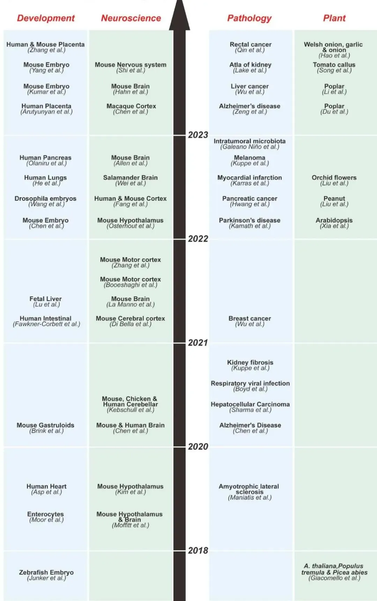
图6
5. 计算挑战：从海量数据中挖掘生物学意义
作者将这些挑战归纳为共计五个核心方向，介绍了相应的生物信息学解决方案。首先，为了充分利用已有的海量群体（bulk） 数据，研究者开发了计算反卷积（deconvolution） 方法，它们能够借助单细胞图谱作为参考，反向推断出群体样本中不同细胞类型的构成比例，从而实现对传统数据的深度挖掘。其次，在处理数百万级别的单细胞数据时，分析面临着两大难题：一是数据的高度稀疏性和**“零膨胀”（zero inflation）** 现象，为此研究者开发了MAGIC等细胞填充（imputation） 算法来补全缺失值；二是如何整合来自不同来源、不同批次的数据，消除批次效应（batch effects） 是其中的关键，而Harmony、MNN以及scVI等批次效应校正（BEC） 工具在此方面发挥了重要作用。
第三个核心挑战来自于数据的整合，尤其是多组学整合 和空间组学整合。针对来自同一个细胞的多模态数据（“配对数据”），可以采用纵向整合 策略（如Seurat v5中的WNN算法）进行分析。而对于来源不同但类型相同的组织数据（“非配对数据”），则需要通过横向整合 策略（如LIGER算法）来对齐。在与空间数据结合时，一个关键应用是利用高分辨率的scRNA-seq数据作为参考，对空间转录组的捕获点进行细胞反卷积 ，Cell2location等工具是实现这一目标的代表。第四个挑战是跨物种分析 ，旨在比较不同物种间的细胞类型以研究进化。MetaNeighbor和SAMap 等算法通过匹配同源基因，使得在物种间进行细胞类型的比对和进化关系推断成为可能。
面对上述所有挑战，人工智能（AI） 正成为不可或缺的解决方案。本章特别强调了AI在该领域的革命性潜力，尤其指出了基础模型（foundation models） 的兴起，如Geneformer和scGPT。这些在大规模单细胞数据上预训练的Transformer模型，能够通过微调（fine-tuning）完成从细胞注释到基因扰动效应预测等一系列复杂任务，将单细胞分析从描述性科学推向了预测性科学。而该领域更前沿的未来方向，是发展基于序列的AI模型 ，这些模型将直接从DNA序列中学习并预测基因的调控逻辑和表达模式，有望从根本上破解基因组的“语法规则”。
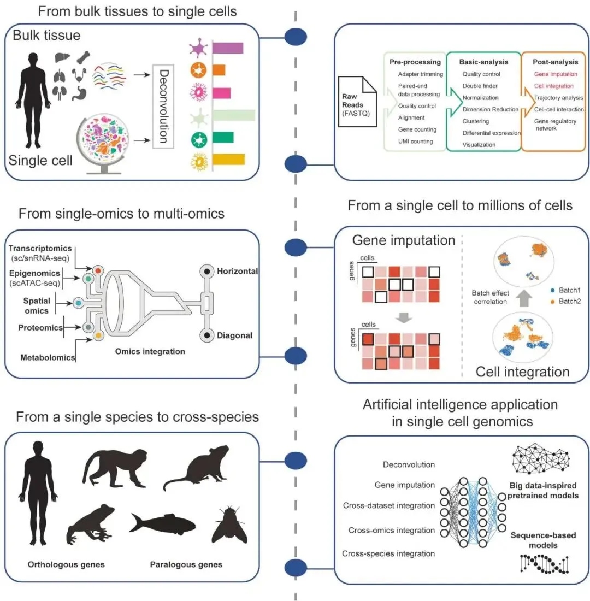
图7
6. 单细胞图谱绘制：系统性描绘生命蓝图
作为生物医学研究中最重要的模式生物，小鼠（murine） 的细胞图谱绘制工作起步最早、也最为深入。早期的里程碑式项目，如小鼠细胞图谱（Mouse Cell Atlas, MCA） 和Tabula Muris 联盟，首次系统性地揭示了小鼠数十个主要器官的细胞类型构成，为后续研究奠定了坚实基础。近年来，研究重点进一步聚焦于发育和衰老过程。一方面，多个团队合作构建了覆盖小鼠从原肠胚到出生后整个发育历程的动态细胞图谱，其中**“小鼠个体发生图谱”（Ontogeny of Mouse）** 的数据规模已超过1200万个细胞，为理解器官形成和细胞谱系分化提供了前所未有的精细视角。另一方面，“衰老小鼠图谱”（Tabula Muris Senis） 等项目则专门描绘了衰老过程中多组织器官的细胞状态变化。
在人体研究方面，人类细胞图谱（Human Cell Atlas, HCA） 计划是一项由全球科学家共同参与的宏伟工程，其核心目标是绘制出健康人体所有细胞类型的参考图谱。与HCA并行的还有美国国立卫生研究院（NIH）发起的人类生物分子图谱计划（HuBMAP） 。在这些大型国际合作框架下，一系列重要成果已经涌现，包括Tabula Sapiens 等多组织、多供体的成人细胞图谱，它们系统性地鉴定了近500种细胞类型。作为HCA的重要组成部分，人类发育细胞图谱（HDCA） 也取得了显著进展，通过整合scRNA-seq和scATAC-seq等多组学数据，详细描绘了人类胚胎和胎儿早期发育的转录和表观调控动态。此外，针对结构和功能最为复杂的大脑，脑科学计划细胞普查网络（BICCN） 正在构建一个涵盖人、非人灵长类和小鼠的跨物种、多组学的脑细胞图谱，为神经科学研究提供了宝贵的资源。
除了人和小鼠，细胞图谱的绘制也扩展到了其他关键模式生物，为比较生物学研究提供了重要依据。非人灵长类细胞图谱（NHPCA） 的构建，为理解灵长类特有的生物学特征以及将小鼠模型的研究成果转化到人类提供了关键的桥梁。对斑马鱼 、非洲爪蟾 和墨西哥钝口螈 等具有强大再生能力的物种的研究，则为再生医学领域揭示了新的分子机制。同时，对果蝇 和秀丽隐杆线虫 等经典遗传学模式生物的全身细胞图谱的绘制，也极大地深化了我们对衰老、发育等基本生命过程保守性的理解。这些跨物种的细胞图谱共同构成了一个庞大的数据库，是未来生命科学研究不可或缺的宝贵财富。
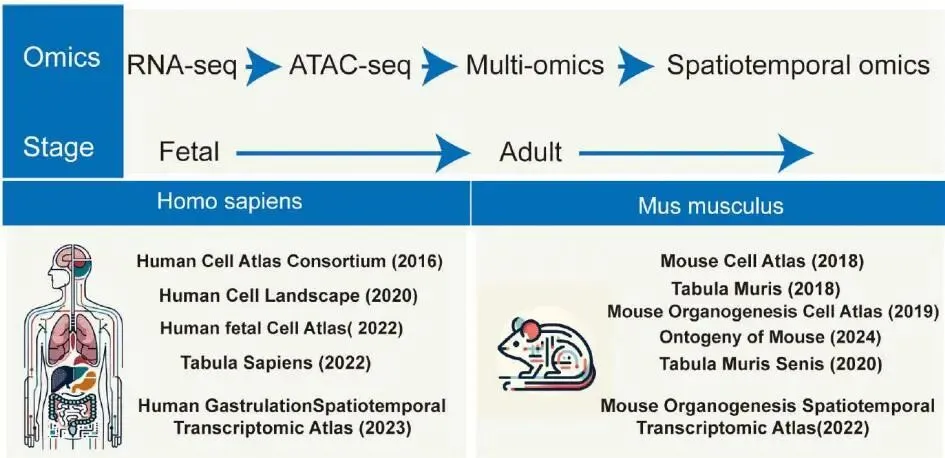
图8
7. 转化医学应用：从实验室到临床的跨越
在癌症研究 领域，单细胞技术带来的超高分辨率，使我们对肿瘤的理解从宏观进入到微观。它不仅能精确追踪肿瘤内的克隆演化、识别罕见的癌症干细胞（CSCs） 和循环肿瘤细胞（CTCs） ，更重要的是，它推动了研究范式的根本转变：从单纯关注癌细胞，转向解析整个肿瘤微环境（TME） 。通过对TME内复杂的细胞生态系统进行拆解，研究人员能够识别出具有不同功能的免疫细胞和基质细胞亚群，例如具有抗肿瘤潜力的CXCL13+ T细胞 ，或促进肿瘤血管生成的SPP1+巨噬细胞 以及重塑基质的癌症相关成纤维细胞（CAFs） 。这种对肿瘤微环境的深刻理解，直接推动了癌症治疗 的进步。在免疫检查点阻断（ICB） 疗法中，单细胞分析正成为解决“哪些患者会响应”这一核心问题的关键。通过对比治疗前后患者样本的细胞变化，研究人员不仅能发现更可靠的疗效预测生物标志物（如特定T细胞亚群的扩增），还能揭示由特定基质或髓系细胞介导的耐药机制。此外，对于免疫治疗中棘手的免疫相关不良事件（irAEs） ，单细胞技术也能通过鉴定攻击正常组织的“罪魁祸首”免疫细胞，为管理这些副作用提供新思路。同时，它也被用于揭示传统放化疗如何重塑肿瘤免疫微环境，为设计更优的联合治疗方案提供了理论依据。
单细胞技术的应用远不止于癌症。在自身免疫性疾病 （如系统性红斑狼疮）中，它能精确识别并表征致病的淋巴细胞亚群，为开发更具靶向性的疗法提供了可能。在COVID-19 等重大传染病 的研究中，单细胞图谱以前所未有的速度揭示了病毒感染后复杂的免疫应答过程，并极大地加速了高效中和抗体 的筛选和发现。在药物发现和精准医疗 的全链条中，单细胞技术正在发挥核心作用。在前端的靶点发现 领域，它可以将GWAS 研究发现的疾病风险基因位点精确定位到特定的细胞类型。在靶点验证和药物筛选阶段，scCRISPR-seq （如Perturb-seq）等技术实现了高通量的功能性筛选。最终，通过对患者病灶进行精细的单细胞患者分层（patient stratification） ，可以为每个病人量身定制最合适的精准医疗（precision medicine） 方案，真正实现“对症下药”的终极目标。
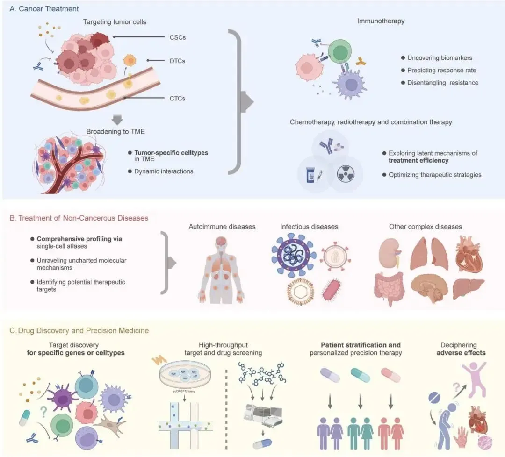
图9
8. 未来展望：迎接单细胞基因组学的下一场革命
在此，作者系统性地指出了当前单细胞和空间基因组学领域面临的核心挑战，并描绘了未来发展的四大关键方向，这些方向将共同推动该领域的下一场技术与应用革命（图10）。第一个方向是提高数据覆盖率 。尽管现有技术足以进行细胞分型，但普遍存在的数据稀疏性问题，极大地限制了我们对单个细胞功能、状态和对外界刺激响应的深入刻画。未来的技术创新，如应用全长转录本捕获、线性扩增和长读长测序等策略，旨在从每个细胞中获取更完整、更丰富、偏差更小的分子信息，这是从“细胞普查”迈向“细胞功能全解析”的必要前提。第二个方向是增强多组学能力 。要真正理解细胞内从基因到功能的完整信息流，就必须在同一个细胞内同步检测尽可能多的分子模态。当前的技术在整合3D基因组等方面仍有通量和分辨率的限制，未来的目标是开发能够同时捕捉DNA-蛋白质相互作用、染色质三维结构和基因表达等多个层面信息的技术，从而建立起表观遗传状态与基因转录之间的直接因果联系。
第三个关键方向是实现单细胞多组学与空间组学的深度融合 。目前，高分子捕获效率的单细胞技术（通常需要解离组织）与能保留原位信息的空间技术之间存在一道鸿沟。未来的突破将来自两个方面：实验上，发展如Slide-tags 等创新技术，即先对组织原位的细胞核进行空间条形码标记，再进行高质量的单细胞分析，从而在物理上直接连接两种信息。计算上，则是开发更先进的算法，利用多模态数据中的共有信息（如RNA）作为“分子桥梁”，将高精度的单细胞数据精确地映射回其原始的空间坐标上。
最后，人工智能（AI）的应用 将成为贯穿上述所有方向的核心驱动力。AI在单细胞领域的作用，正在从数据后处理和分析，转向更具挑战性的预测和生成任务。特别是以Geneformer和scGPT为代表的基础模型（foundation models） 的兴起，标志着一个新时代的到来。这些在大规模数据上预训练的模型，能够学习基因调控的深层语法，并用于 in silico （计算模拟）基因扰动预测等前沿应用。而终极目标，是开发出能够直接从DNA序列预测基因表达和细胞功能的AI模型。所有这些技术的最终归宿是临床转化 。通过构建精细的细胞调控图谱，我们可以将GWAS 发现的大量位于非编码区的疾病风险位点，与其调控的靶基因和作用的细胞类型精确关联起来。这不仅能揭示疾病机理，更有望催生全新的治疗策略，例如，利用CRISPR 基因编辑技术直接修复有缺陷的增强子等调控元件，从而开启一个超越传统靶向蛋白质药物的、更根本的精准医疗 新范式。
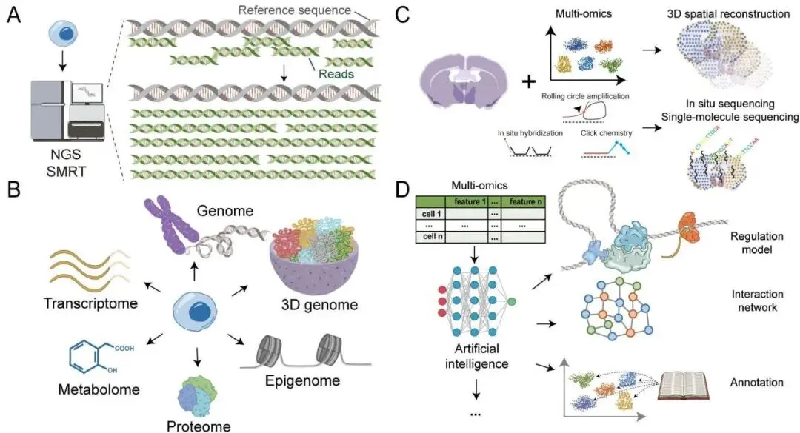
图10
总结讨论
综上，单细胞和空间基因组学技术的快速发展为生物医学研究带来了前所未有的机遇和挑战。这篇综述通过详细介绍技术方法、应用场景和未来方向，展示了这些技术在揭示细胞异质性、疾病机制和治疗策略中的巨大潜力。然而，当前仍面临数据覆盖率不足、成本高昂、数据整合复杂等挑战，亟待技术创新和方法优化 。未来，随着AI技术的深度融合、数据分析工具的进步以及多组学整合能力的提升，单细胞和空间基因组学有望在精准医疗、药物研发和临床诊断中发挥更加重要的作用。特别是，通过构建高分辨率的细胞图谱和调控网络图谱，研究人员将能够更精确地识别治疗靶点、预测药物反应，并为患者提供个性化的治疗方案 。总之，单细胞和空间基因组学不仅是基础研究的利器，更是推动医学进步的关键驱动力，其发展前景令人期待。

如何联系我们

 留一个领取资料、免费两周学习版服务器的微信号[Biomamba_zhushou]，方便各位随时交流。同时我们也构建了交流群矩阵，欢迎大家入群讨论。
大家可以阅读完这几篇之后添加给生信入门初学者的小贴士
没有检索，就没有发言权
留一个领取资料、免费两周学习版服务器的微信号[Biomamba_zhushou]，方便各位随时交流。同时我们也构建了交流群矩阵，欢迎大家入群讨论。
大家可以阅读完这几篇之后添加给生信入门初学者的小贴士
没有检索，就没有发言权
已有生信基地联系方式的同学无需重复添加

 您点的每个赞和在看，我都认真当成了喜欢
您点的每个赞和在看，我都认真当成了喜欢